import numpy as np6 Librerías de Python
6.1 Introducción
Python es un lenguaje de programación muy popular, poderoso y versátil que cuenta con una amplia gama de bibliotecas que ayudan a que la programación sea más fácil y eficiente. Pero, ¿qué son las bibliotecas? La bibliotecas son conjuntos de módulos que contienen funciones, clases y variables relacionadas, que permiten realizar tareas sin tener que escribir el código desde cero y este se puede reutilizar en múltiples programas y proyectos.
Entre las bibliotecas disponibles se encuentran las estándares, que se incluye con cada instalación de Python, y las de código abierto creadas por la gran comunidad de desarrolladores, que constantemente genera nuevas bibliotecas y mejora las existentes. Por ello es aconsejable que, al momento de utilizarlas, se verifique si existe alguna actualización en las guías de usuario.
Asimismo, estas bibliotecas se pueden clasificar según su aplicación y funcionalidad en: procesamiento de datos, visualización, aprendizaje automático, desarrollo web, procesamiento de lenguaje y de imágenes, entre otras. En este capítulo se analizarán tres de las bibliotecas más reconocidas y ampliamente utilizadas de Python: NumPy y Pandas para procesamiento de datos y Matplotlib, para visualización.
6.1.1 ¿Cómo se utilizan las bibliotecas?
Para acceder a una biblioteca y sus funciones, se debe instalar por única vez y luego, importar cada vez que la necesitemos.
En la parte superior de nuestro código debemos correr import {nombre_de_biblioteca} as {nombre_corto_de_biblioteca}. El alias o nombre corto de la biblioteca se suele agregar para lograr una mayor legilibilidad del código, pero no es mandatorio.
import numpy as np
Note
En nuestro caso, la instalación no es necesaria ya que utilizamos Google Colab**, pero en caso de usar otro IDE (como por ejemplo, Visual Studio Code), se realiza desde el símbolo del sistema (o en inglés: “Command Prompt”, o terminal o consola), corriendo: pip install –nombre_de_biblioteca.
6.2 NumPy
NumPy es una biblioteca de código abierto muy utilizada en el campo de la ciencia y la ingeniería. Permite trabajar con datos numéricos, matrices multidimensionales, funciones matemáticas y estadísticas avanzadas.
Como ya se mencionó anteriormente, para utilizarse se debe instalar e importar. Por convención, se suele importar como:
NumPy incorpora una estructura de datos propia llamados arrays que es similar a la lista de Python, pero puede almacenar y operar con datos de manera mucho más eficiente: el procesamiento de los arrays es hasta 50 veces más rápido. Esta diferencia de velocidad se debe, en parte, a que los arrays contienen datos homogéneos, a diferencia de las listas que pueden contener distintos tipos de datos dentro.
6.2.1 Arrays
Un array es un conjunto de elementos del mismo tipo, donde cada uno de ellos posee una posición y esta es única para cada elemento. Como dijimos arriba, en Python vimos las listas, que es lo más parecido a un Array.
Analicemos el siguiente ejemplo: si pensamos en una matriz, lo primero que nos viene a la mente es una tabla con valores ordenados en filas y columnas, donde una fila es la línea horizontal y una columna es la vertical. Es decir, una matriz es un conjunto de elementos que posee una posición o índice determinado determinado por la fila y la columna, por lo que sería un array.
En este capítulo se trabajará principalmente con vectores y matrices ya que consideramos que les será útil para aplicar los conocimientos de Numpy en otras materias.
6.2.1.1 Creación de un Array
Un array se crea usando la función array() a partir de listas o tuplas. Por ejemplo:
a = np.array([1, 2, 3])
print(a)[1 2 3]También, se pueden crear arrays particulares, constituídos por ceros con zeros() o por unos con ones():
# Creo un array de ceros con dos elementos
a_ceros = np.zeros(2)
print(a_ceros)[0. 0.]# Creo un array de unos con dos elementos
a_unos = np.ones(2)
print(a_unos)[1. 1.]Además, se pueden crear arrays con un rango de números, utilizando arange() o linspace():
# Creo un array con un rango que empieza en 2 hasta 9 y va de 2 en 2.
a_rango = np.arange(2, 9, 2)
print(a_rango)[2 4 6 8]# Creo un array con un rango formado por 4 números
# que empieza en 2 hasta 10 (incluídos).
a_rango_2 = np.linspace(2, 10, num=4)
print(a_rango_2)[ 2. 4.66666667 7.33333333 10. ]Esto es muy parecido a los rangos que ya vimos en Python, con la sutil diferencia de que el final del rango en este caso sí se icnluye.
Finalmente, para crear arrays de más dimensiones, se utilizan varias listas:
matriz = np.array([[1, 2, 3], [4, 5, 6]])
print(matriz)[[1 2 3]
[4 5 6]]6.2.1.2 Atributos de un array
6.2.1.3 Dimensión
Para caracterizar un array es necesario conocer sus dimensiones, utilizando ndim. De esta forma, se puede confirmar que el array llamado matriz, definido anteriormente, es bidimensional:
# Número de ejes o dimensiones de la matriz
matriz.ndim26.2.1.4 Forma
Otra característica de interés es su forma o shape: para las matrices bidimensionales, se muestra una tupla (n, m) con el número de filas n y de columnas m:
# (n = filas, m = columnas)
matriz.shape(2, 3)6.2.1.5 Tamaño
El tamaño de un array es el número total de elementos que contiene, y se obtiene con size:
# Número total de elementos de la matriz: 2 filas x 3 columnas = 6 elementos
matriz.size66.2.1.6 Posiciones
Al elemento de una matriz A que se encuentra en la fila i-ésima y la columna j-ésima se llama \(a_{ij}\). Así, para acceder a un elemento de un array se debe indicar primero la posición de la fila y luego, de la columna:
print('Elemento de la primera fila y segunda columna: ', matriz[0, 1])Elemento de la primera fila y segunda columna: 2Nótese la diferencia con las matrices (listas de listas) de Python, donde se accedía a un elemento por separado, primero a la fila y luego a la columna: matriz[0][1].
También se puede elegir un rango de elementos en una fila o columna particular:
print('Los elementos de la primera fila, columnas 0 y 1: ', matriz[0, 0:2])Los elementos de la primera fila, columnas 0 y 1: [1 2]print('Los elementos de la segunda columna, filas 0 y 1: ', matriz[0:2, 1])Los elementos de la segunda columna, filas 0 y 1: [2 5]6.2.1.7 Modificar arrays
De forma similar a lo aprendido con las listas de Python, se pueden modificar los arrays utilizando ciertas funciones. Para entender y aplicar las mismas, definamos un vector llamado a:
a = np.array([2, 1, 5, 3, 7, 4, 6, 8])
print(a)[2 1 5 3 7 4 6 8]6.2.1.7.1 Reshape
A este vector, se le puede modificar la forma: pasando de ser (8,) a (4,2), por dar un ejemplo:
a_reshape = a.reshape(2, 4) # 2 filas y 4 columnas
print(a_reshape)[[2 1 5 3]
[7 4 6 8]]6.2.1.7.2 Insert
También, se modría insertar una fila (axis = 0) o una columna (axis = 1) en una determinada posición. Por ejemplo:
# Agregar fila de cincos en posición 1:
print(np.insert(a_reshape, 1, 5, axis=0))[[2 1 5 3]
[5 5 5 5]
[7 4 6 8]]A la función insert(), se le debe indicar:
- El array que se desea modificar
- La posición de la fila o columna que se desea agregar
- Los valores a insertar. ¡Ojo con las dimensiones! Para el ejemplo anterior, a_reshape tenía 2 filas, por lo que se debe agregar una columna con 2 elementos o una fila con 4.
- El eje que se agrega: una fila (axis = 0) o una columna (axis = 1)
# Agregar columna de cincos en posición 1:
print(np.insert(a_reshape, 1, 5, axis=1))[[2 5 1 5 3]
[7 5 4 6 8]]O lo que es equivalente:
# Agregar columna de cincos en posición 1:
print(np.insert(a_reshape, 1, [5, 5], axis=1))[[2 5 1 5 3]
[7 5 4 6 8]]6.2.1.7.3 Append y Delete
También podríamos agregar una fila o una columna utilizando append() al final, como ocurría con las listas:
# Agregar una última fila
a_modificada = np.append(a_reshape, [[1, 2, 3, 4]], axis=0)
print(a_modificada)[[2 1 5 3]
[7 4 6 8]
[1 2 3 4]]O eliminarlas con delete()
# Eliminar la fila de la posición 2.
print(np.delete(a_modificada, 2, axis=0))[[2 1 5 3]
[7 4 6 8]]6.2.1.7.4 Concatenate y Sort
Finalmente, podemos concatenar arrays, como los siguientes:
a = np.array([2, 1, 5, 3])
b = np.array([7, 4, 6, 8])
# Concatenar a y b:
c = np.concatenate((a, b))
print(c)[2 1 5 3 7 4 6 8]Y ordenar los elementos de un array como numérico o alfabético, ascendente o descendente.
print(np.sort(c))[1 2 3 4 5 6 7 8]6.2.2 Operaciones aritméticas utilizando array
Como se ha mencionado anteriormente, Numpy tiene un gran potencial para realizar operaciones, muy superior al de las listas de Python. Por ejemplo, si quisieramos sumar dos listas de python necesitaríamos realizar un for:
# Definir listas
a = [2, 1, 5, 3]
b = [7, 4, 6, 8]
c = []
# Sumar el primer elemento de a con el primero de b, el segundo elemento de a con el segundo de b y así sucesivamente
for i in range(len(a)):
c.append(a[i] + b[i])
print(c)[9, 5, 11, 11]Utlizando las funciones de Numpy, esto ya no es más necesario:
# add() para sumar elemento a elemento de a y b
c = np.add(a, b)
print(c)[ 9 5 11 11]También podemos realizar otras operaciones, como la resta, multiplicación y división. Usar un arreglo dentro de una ecuación nos devuelve otro arreglo, donde cada elemento es el resultado de aplicar la operación a los elementos correspondientes de los arreglos originales.
x = np.array([0, 1, 2, 3, 4, 5, 6, 7, 8, 9, 10])
y = 3 * x + 2
print(y)[ 2 5 8 11 14 17 20 23 26 29 32]De esta forma, podemos realizar operaciones aritméticas con arrays de Numpy de forma muy sencilla y rápida. Antes, en Python, para realizar estas operaciones debíamos recurrir a un ciclo for o a el uso de map. Numpy se ocupa de ahorrarnos el trabajo y calcular, para cada elemento del array, el resultado.
Además, tenemos operaciones básicas que vienen predefinidas por Numpy. Las vamos a ver a continuación.
6.2.2.1 Operaciones básicas:
A continuación se muestra una lista con las operaciones básicas junto con sus operadores asociados, funciones y ejemplos.
| Operación | Operador | Función |
|---|---|---|
| Suma | + |
add() |
| Resta | - |
subtract() |
| Multiplicación | * |
multiply() |
| División | / |
divide() |
| Potencia | ** |
power() |
Definimos los vectores a y b con los que operaremos y veremos ejemplos:
a = np.array([1, 3, 5, 7])
b = np.array([1, 1, 2, 2])- Suma:
resultado_1 = a + b
print("Suma usando +:", resultado_1)
resultado_2 = np.add(a, b)
print("Suma usando add():", resultado_2) Suma usando +: [2 4 7 9]
Suma usando add(): [2 4 7 9]- Resta:
resultado_1 = a - b
print("Resta usando -:", resultado_1)
resultado_2 = np.subtract(a, b)
print("Resta usando subtract():", resultado_2) Resta usando -: [0 2 3 5]
Resta usando subtract(): [0 2 3 5]- Multiplicación:
resultado_1 = a * b
print("Multiplicación usando *:", resultado_1)
resultado_2 = np.multiply(a, b)
print("Multiplicación usando multiply():", resultado_2) Multiplicación usando *: [ 1 3 10 14]
Multiplicación usando multiply(): [ 1 3 10 14]- División:
resultado_1 = a / b
print("División usando /:", resultado_1)
resultado_2 = np.divide(a, b)
print("División usando divide():", resultado_2) División usando /: [1. 3. 2.5 3.5]
División usando divide(): [1. 3. 2.5 3.5]- Potencia:
resultado_1 = a ** b
print("Potencia usando **:", resultado_1)
resultado_2 = np.power(a, b)
print("Potencia usando power():", resultado_2) Potencia usando **: [ 1 3 25 49]
Potencia usando power(): [ 1 3 25 49]
Note
Note que si quisieramos operar con un vector b de elementos iguales, podríamos utilizar un escalar.
b = np.array([2, 2, 2, 2])
resultado_1 = a * b
print("Usando un vector b = [2, 2, 2, 2]:", resultado_1)
resultado_2 = a * 2
print("Usando un escalar b = 2:", resultado_2) Usando un vector b = [2, 2, 2, 2]: [ 2 6 10 14]
Usando un escalar b = 2: [ 2 6 10 14]6.2.2.2 Logaritmo:
NumPy provee funciones para los logaritmos de base 2, 10 y e:
| Base | Función |
|---|---|
| 2 | log2() |
| 10 | log10() |
| e | log() |
Por ejemplo:
# Ejemplo log2()
print("Logaritmo base 2:", np.log2([2, 4, 8, 16]))
# Ejemplo log10()
print("Logaritmo base 10:", np.log10([10, 100, 1000, 10000]))
# Ejemplo log()
print("Logaritmo base e:", np.log([1, np.e, np.e**2]))Logaritmo base 2: [1. 2. 3. 4.]
Logaritmo base 10: [1. 2. 3. 4.]
Logaritmo base e: [0. 1. 2.]
Note
Note que el número de Euler o número e es una constante incluída en NumPy como: np.e
np.e2.7182818284590456.2.2.3 Funciones trigonométricas:
A continuación, una lista con las funciones trigonométricas más utilizadas, que toman los valores en radianes:
| Función trigonométrica | Función |
|---|---|
| seno | sin() |
| coseno | cos() |
| tangente | tan() |
| arcoseno | arcsin() |
| arcocoseno | arccos() |
| arcotangente | arctan() |
Por ejemplo:
# Ejemplo de seno
print("Seno de π / 2:", np.sin(np.pi / 2))
# Ejemplo de arcoseno
print(np.arcsin(1))Seno de π / 2: 1.0
1.5707963267948966# Ejemplo de coseno
print("Coseno de π:", np.cos(np.pi))
# Ejemplo de arcocoseno
print("Arcoseno de -1:", np.arccos(-1))Coseno de π: -1.0
Arcoseno de -1: 3.141592653589793# Ejemplo de tangente:
print("Tangente de 0:", np.tan(0))
# Ejemplo de arcotangente:
print("Arcotangente de 0:", np.arctan(0))Tangente de 0: 0.0
Arcotangente de 0: 0.0
Note
Note que el número π es una constante incluída en NumPy como: np.pi
np.pi3.141592653589793Para convertir los radianes a grados y viceversa, se utiliza deg2rad() y rad2deg() respectivamente:
print("De grados [90, 180, 270, 360] a radianes:",
np.deg2rad([90, 180, 270, 360]))
print("De radianes [π/2, π, 1.5*π, 2*π] a grados:",
np.rad2deg([np.pi/2, np.pi, 1.5*np.pi, 2*np.pi]))De grados [90, 180, 270, 360] a radianes: [1.57079633 3.14159265 4.71238898 6.28318531]
De radianes [π/2, π, 1.5*π, 2*π] a grados: [ 90. 180. 270. 360.]6.2.2.4 Operaciones con matrices:
A continuación, una lista con las operaciones que les pueden ser de interés mientras estudian álgebra matricial:
| Función | Descripción | Comentario |
|---|---|---|
dot() |
Producto escalar | Se utiliza para obtener el producto escalar entre dos vectores. El resultado es un número. |
dot() |
Producto vectorial | También se utiliza para multiplicar matrices. El resultado es una matriz |
transpose() |
Traspuesta | Cambia las filas por las columnas y viceversa |
linalg.inv() |
Inversa | Inversa de una matriz |
linalg.det() |
Determinante | Determinante de una matriz |
eye() |
Matriz identidad | Matriz cuadrada con unos en la diagonal principal y ceros en el resto |
Definimos los arreglos 1 y 2, y matrices 1 y 2 con los que operaremos y veremos ejemplos:
# Crear arreglos
arreglo_1 = np.array([1, 2])
arreglo_2 = np.array([3, 4])
# Crear matrices
matriz_1 = np.array([[1, 3], [5, 7]])
matriz_2 = np.array([[2, 6], [4, 8]])print("Producto escalar entre el array 1 y 2: \n", np.dot(arreglo_1, arreglo_2))Producto escalar entre el array 1 y 2:
11print("Producto vectorial entre la matriz 1 y 2: \n", np.dot(matriz_1, matriz_2))Producto vectorial entre la matriz 1 y 2:
[[14 30]
[38 86]]print("Traspuesta de la matriz 1: \n", np.transpose(matriz_1))Traspuesta de la matriz 1:
[[1 5]
[3 7]]print("Inversa de la matriz 1: \n", np.linalg.inv(matriz_1))Inversa de la matriz 1:
[[-0.875 0.375]
[ 0.625 -0.125]]print("Determinante de la matriz 1: \n", np.linalg.det(matriz_1))Determinante de la matriz 1:
-7.999999999999998
Note
Note que así como existen constantes numéricas, existen las matrices particulares como las compuestas por ceros np.zeros(), por unos np.ones() y la matriz identidad np.eyes.
print("Matriz de identidad de 3x3: \n", np.eye(3))Matriz de identidad de 3x3:
[[1. 0. 0.]
[0. 1. 0.]
[0. 0. 1.]]6.2.2.5 Más operaciones útiles:
| Operaciones | Función | Descripción |
|---|---|---|
| Máximo | max() |
Valor máximo del array o del eje indicado |
| Mínimo | min() |
Valor mínimo del array o del eje indicado |
| Suma | sum() |
Suma de todos los elementos o del eje indicado |
| Promedio | mean() |
Promedio de todos los elementos o del eje indicado |
Utilizando la matriz data como ejemplo:
data = np.array([[1, 2], [5, 3], [4, 6]])- Valor máximo
print("Valor máximo de todo el array: ", data.max())
print("Valores máximos de cada columna: ", data.max(axis=0))Valor máximo de todo el array: 6
Valores máximos de cada columna: [5 6]- Valor mínimo
print("Valor mínimo de todo el array: ", data.min())
print("Valores mínimos de cada fila: ", data.min(axis=1))Valor mínimo de todo el array: 1
Valores mínimos de cada fila: [1 3 4]- Suma de elementos:
print("Suma de todos los elementos del array: ", data.sum())
print("Suma de los elementos de cada fila: ", data.sum(axis=1))Suma de todos los elementos del array: 21
Suma de los elementos de cada fila: [ 3 8 10]- Promedio:
print("Promedio de todos los elementos del array: ", data.mean())
print("Promedio de los elementos de cada columna: ", data.mean(axis=0))Promedio de todos los elementos del array: 3.5
Promedio de los elementos de cada columna: [3.33333333 3.66666667]
Note
Numpy te va a ser muy útil cuando curses materias como Análisis Matemático, Álgebra, Física, Estadística, entre otras. Te va a permitir realizar operaciones de manera rápida y eficiente, y te va a ayudar a entender mejor los conceptos.
6.3 Pandas
Pandas es una biblioteca de código abierto diseñada específicamente para la manipulación y el análisis de datos en Python. Es una herramienta poderosa que puede ayudar a los usuarios a limpiar, transformar y analizar datos de una manera rápida y eficiente.
Dado que se basa en NumPy, luego de instalarse, se deben importar ambas bibliotecas. Por convención:
import pandas as pdLos datos a trabajar en Pandas van a tener, en general, una forma muy similar a las tablas:

Pandas incorpora dos estructuras de datos llamados: Series y DataFrames. Los vamos a ver a continuación.
6.3.1 Serie
Una serie es un vector (unidimensional) capaz de contener cualquier tipo de dato, como por ejemplo, números enteros o decimales, strings, objetos de Python, etc.
Para crearlas, se puede partir de un escalar, una lista, un diccionario, etc., utilizando pd.Serie():
# Crear serie partiendo de una lista:
lista = [1, "a", 3.5]
pd.Series(lista)0 1
1 a
2 3.5
dtype: objectNote que se ven dos líneas verticales de datos. A la derecha se observa una columna con los elementos de la lista antes creada, mientas que a la izquierda se encuentra el índice, formado por valores desde 0 a n-1, siendo n la cantidad de elementos. Este índice numérico es el predefinido, por lo que si se deseara uno particular, se puede establecer utilizando index.
El índice es de vital importancia ya que permite acceder a los elementos de la serie. Es por ello que al colocar un índice en particular, su longitud debe ser acorde al número de elementos de la misma. De lo contrario, se mostrará un ValueError.
# Crear serie partiendo de una lista, indicando el índice
pd.Series(lista, index = ["x", "y", "z"])x 1
y a
z 3.5
dtype: objectEn el caso de crear Series utilizando diccionarios, sus claves (o keys) pasan a formar el índice.
# Crear serie partiendo de un diccionario:
diccionario = {"x": 1, "y": "a", "z": 3.5}
a = pd.Series(diccionario)
ax 1
y a
z 3.5
dtype: objectComo ya se debe estar imaginando, para acceder a un elemento de la serie, se debe indicar el valor del índice o la posición entre corchetes.
# Acceder al elemento de índice x:
a["x"]1# Acceder al elemento de posición 0:
a[0]1Otra característica interesante de las series (y de los DataFrames, como se verá a continuación) es la vectorización: así como los arrays, no requieren recorrer valor por valor en un for para realizar operaraciones. Por ejemplo:
a + ax 2
y aa
z 7.0
dtype: object6.3.2 DataFrame
Un DataFrame es una estructura de datos tabular (bidimensional), compuesta por filas y columnas, que se asemeja a una hoja de cálculo de Excel. Para crearlos, se utiliza DataFrame() y se ingresan diferentes estructuras como arrays, diccionarios, listas, series u otros dataframes.
En el siguiente ejemplo, se crea un Dataframe partiendo de un diccionario data para las columnas y de una lista label para el índice:
data = {'columna_1': ['a', 'b', 'c', 'd', 'e', 'f'],
'columna_2': [2.5, 3, 0.5, None, 5, None],
'columna_3': [1, 3, 2, 3, 2, 3]}
labels = ['a1', 'a2', 'a3', 'a4', 'a5', 'a6']
pd.DataFrame(data, index=labels)| columna_1 | columna_2 | columna_3 | |
|---|---|---|---|
| a1 | a | 2.5 | 1 |
| a2 | b | 3.0 | 3 |
| a3 | c | 0.5 | 2 |
| a4 | d | NaN | 3 |
| a5 | e | 5.0 | 2 |
| a6 | f | NaN | 3 |
6.3.2.1 Atributos y descripción de un Dataframe
A continuación, se observa una tabla con métodos que nos permiten conocer las características de un determinado DataFrame.
| Método | Descripción |
|---|---|
info() |
Resume la información del DataFrame |
shape |
Devuelve una tupla con el número de filas y columnas |
size |
Número de elementos |
columns |
Lista con los nombres de las columnas |
index |
Lista con los nombres de las filas |
dtypes |
Serie con los tipos de datos de las columnas |
head() |
Muestra las primeras filas |
tail() |
Muestra las últimas filas |
df.describe() |
Brinda métricas de las columnas numéricas |
Para ejemplificar los métodos y las funciones de Pandas, usaremos el DataFrame df definido en la siguiente línea de código.
data = {'nombre': ['José Martínez', 'Rosa Díaz', 'Javier Garcíaz', 'Carmen López', 'Marisa Collado', 'Antonio Ruiz', 'Antonio Fernández',
'Pilar González', 'Pedro Tenorio', 'Santiago Manzano', 'Macarena Álvarez', 'José Sanz', 'Miguel Gutiérrez', 'Carolina Moreno'],
'edad': [18, 32, 24, 35, 46, 68, 51, 22, 35, 46, 53, 58, 27, 20],
'sexo': ['H', 'M', 'H', 'M', 'M', 'H', 'H', 'M', 'H', 'H', 'M', 'H', 'H', 'M'],
'peso': [85.0, 65.0, None, 65.0, 51.0, 66.0, 62.0, 60.0, 90.0, 75.0, 55.0, 78.0, 109.0, 61.0],
'altura': [1.79, 1.73, 1.81, 1.7, 1.58, 1.74, 1.72, 1.66, 1.94, 1.85, 1.62, 1.87, 1.98, 1.77],
'colesterol': [182.0, 232.0, 191.0, 200.0, 148.0, 249.0, 276.0, None, 241.0, 280.0, 262.0, 198.0, 210.0, 194.0]}
df = pd.DataFrame(data)
df| nombre | edad | sexo | peso | altura | colesterol | |
|---|---|---|---|---|---|---|
| 0 | José Martínez | 18 | H | 85.0 | 1.79 | 182.0 |
| 1 | Rosa Díaz | 32 | M | 65.0 | 1.73 | 232.0 |
| 2 | Javier Garcíaz | 24 | H | NaN | 1.81 | 191.0 |
| 3 | Carmen López | 35 | M | 65.0 | 1.70 | 200.0 |
| 4 | Marisa Collado | 46 | M | 51.0 | 1.58 | 148.0 |
| 5 | Antonio Ruiz | 68 | H | 66.0 | 1.74 | 249.0 |
| 6 | Antonio Fernández | 51 | H | 62.0 | 1.72 | 276.0 |
| 7 | Pilar González | 22 | M | 60.0 | 1.66 | NaN |
| 8 | Pedro Tenorio | 35 | H | 90.0 | 1.94 | 241.0 |
| 9 | Santiago Manzano | 46 | H | 75.0 | 1.85 | 280.0 |
| 10 | Macarena Álvarez | 53 | M | 55.0 | 1.62 | 262.0 |
| 11 | José Sanz | 58 | H | 78.0 | 1.87 | 198.0 |
| 12 | Miguel Gutiérrez | 27 | H | 109.0 | 1.98 | 210.0 |
| 13 | Carolina Moreno | 20 | M | 61.0 | 1.77 | 194.0 |
6.3.2.1.1 Info
Con info() se puede ver: - el índice en la primera línea, que es un rango de 0 a 13 - el número total de columnas en la segunda línea - el uso de la memoria en la última - una tabla con los nombres de las columnas en Column, la cantidad de valores no nulos en Non-Null Count y el tipo de dato en Dtype para cada una de ellas.
df.info()<class 'pandas.core.frame.DataFrame'>
RangeIndex: 14 entries, 0 to 13
Data columns (total 6 columns):
# Column Non-Null Count Dtype
--- ------ -------------- -----
0 nombre 14 non-null object
1 edad 14 non-null int64
2 sexo 14 non-null object
3 peso 13 non-null float64
4 altura 14 non-null float64
5 colesterol 13 non-null float64
dtypes: float64(3), int64(1), object(2)
memory usage: 804.0+ bytesNote que utilizando dtypes, columns e index se obtiene parte de esta información:
# Tipo de dato por columna
df.dtypesnombre object
edad int64
sexo object
peso float64
altura float64
colesterol float64
dtype: object# Nombre de cada columna
df.columnsIndex(['nombre', 'edad', 'sexo', 'peso', 'altura', 'colesterol'], dtype='object')# índice
df.indexRangeIndex(start=0, stop=14, step=1)6.3.2.1.2 Shape
La forma del DataFrame es de 14 filas y 6 columnas, por lo que contiene 84 elementos.
# Forma del DataFrame (filas, columnas)
df.shape(14, 6)# Número de elementos del DataFrame
df.size846.3.2.1.3 Head
Asimismo, cuando no conocemos un DataFrame, puede ser importante ver las primeras 5 filas con head() o las últimas con tail(). Si se quisiera observar un número determinado, sólo hay que especificarlo, por ejemplo:
# Mostrar las primeras 3 filas.
df.head(3)| nombre | edad | sexo | peso | altura | colesterol | |
|---|---|---|---|---|---|---|
| 0 | José Martínez | 18 | H | 85.0 | 1.79 | 182.0 |
| 1 | Rosa Díaz | 32 | M | 65.0 | 1.73 | 232.0 |
| 2 | Javier Garcíaz | 24 | H | NaN | 1.81 | 191.0 |
# Mostrar las últimas 5 filas.
df.tail()| nombre | edad | sexo | peso | altura | colesterol | |
|---|---|---|---|---|---|---|
| 9 | Santiago Manzano | 46 | H | 75.0 | 1.85 | 280.0 |
| 10 | Macarena Álvarez | 53 | M | 55.0 | 1.62 | 262.0 |
| 11 | José Sanz | 58 | H | 78.0 | 1.87 | 198.0 |
| 12 | Miguel Gutiérrez | 27 | H | 109.0 | 1.98 | 210.0 |
| 13 | Carolina Moreno | 20 | M | 61.0 | 1.77 | 194.0 |
6.3.2.1.4 Describe
Por otro lado, describe() devuelve un resumen descriptivo de las columnas de valores numéricos, como “edad”, “peso”, “altura” y “colesterol”.
df.describe()| edad | peso | altura | colesterol | |
|---|---|---|---|---|
| count | 14.000000 | 13.000000 | 14.000000 | 13.000000 |
| mean | 38.214286 | 70.923077 | 1.768571 | 220.230769 |
| std | 15.621379 | 16.126901 | 0.115016 | 39.847948 |
| min | 18.000000 | 51.000000 | 1.580000 | 148.000000 |
| 25% | 24.750000 | 61.000000 | 1.705000 | 194.000000 |
| 50% | 35.000000 | 65.000000 | 1.755000 | 210.000000 |
| 75% | 49.750000 | 78.000000 | 1.840000 | 249.000000 |
| max | 68.000000 | 109.000000 | 1.980000 | 280.000000 |
Estas métricas podrían obtenerse utilizando funciones determinadas, como:
count(): contabiliza los valores no nulosmean(): promediomin(): valor mínimomax(): valor máximo
Por ejemplo:
df.count()nombre 14
edad 14
sexo 14
peso 13
altura 14
colesterol 13
dtype: int64Finalmente, como ocurre con las series, para acceder a los elementos de un DataFrame se puede indicar la posición o el nombre de la fila o columna.
Para acceder a una fila en particular, utilizamos iloc[] con un entero, una lista de enteros o un rango de números que indican las posiciones o con loc[] indicando el valor del índice.
# Mostrar los datos de la fila de posición 0:
df.iloc[0]nombre José Martínez
edad 18
sexo H
peso 85.0
altura 1.79
colesterol 182.0
Name: 0, dtype: object
# Mostrar la fila de posición 0:
df.iloc[[0]]| nombre | edad | sexo | peso | altura | colesterol | |
|---|---|---|---|---|---|---|
| 0 | José Martínez | 18 | H | 85.0 | 1.79 | 182.0 |
# Mostrar las filas de posición 0 y 3:
df.iloc[[0, 3]]| nombre | edad | sexo | peso | altura | colesterol | |
|---|---|---|---|---|---|---|
| 0 | José Martínez | 18 | H | 85.0 | 1.79 | 182.0 |
| 3 | Carmen López | 35 | M | 65.0 | 1.70 | 200.0 |
# Mostrar las filas de posiciones entre 0 hasta 3 (exclusive):
df.iloc[:3]| nombre | edad | sexo | peso | altura | colesterol | |
|---|---|---|---|---|---|---|
| 0 | José Martínez | 18 | H | 85.0 | 1.79 | 182.0 |
| 1 | Rosa Díaz | 32 | M | 65.0 | 1.73 | 232.0 |
| 2 | Javier Garcíaz | 24 | H | NaN | 1.81 | 191.0 |
# Equivalente a df.iloc[:3]:
df.head(3)| nombre | edad | sexo | peso | altura | colesterol | |
|---|---|---|---|---|---|---|
| 0 | José Martínez | 18 | H | 85.0 | 1.79 | 182.0 |
| 1 | Rosa Díaz | 32 | M | 65.0 | 1.73 | 232.0 |
| 2 | Javier Garcíaz | 24 | H | NaN | 1.81 | 191.0 |
# Mostar la fila cuyo valor del índice es 0:
df.loc[0]nombre José Martínez
edad 18
sexo H
peso 85.0
altura 1.79
colesterol 182.0
Name: 0, dtype: object6.3.2.1.5 Accediendo a columnas
Por otro lado, para acceder a una columna se pueden utilizar los nombres de la mismas con DataFrame[columna] o su equivalente DataFrame.columna.
# Mostrar la columna "nombre"
df[['nombre']] # o df.nombre| nombre | |
|---|---|
| 0 | José Martínez |
| 1 | Rosa Díaz |
| 2 | Javier Garcíaz |
| 3 | Carmen López |
| 4 | Marisa Collado |
| 5 | Antonio Ruiz |
| 6 | Antonio Fernández |
| 7 | Pilar González |
| 8 | Pedro Tenorio |
| 9 | Santiago Manzano |
| 10 | Macarena Álvarez |
| 11 | José Sanz |
| 12 | Miguel Gutiérrez |
| 13 | Carolina Moreno |
# Mostrar más de una columna: "nombre" y "edad":
df[['nombre', 'edad']]| nombre | edad | |
|---|---|---|
| 0 | José Martínez | 18 |
| 1 | Rosa Díaz | 32 |
| 2 | Javier Garcíaz | 24 |
| 3 | Carmen López | 35 |
| 4 | Marisa Collado | 46 |
| 5 | Antonio Ruiz | 68 |
| 6 | Antonio Fernández | 51 |
| 7 | Pilar González | 22 |
| 8 | Pedro Tenorio | 35 |
| 9 | Santiago Manzano | 46 |
| 10 | Macarena Álvarez | 53 |
| 11 | José Sanz | 58 |
| 12 | Miguel Gutiérrez | 27 |
| 13 | Carolina Moreno | 20 |
Finalmente, se puede utilizar loc[filas, columnas] que devuelve un DataFrame con los elemento que se encuentra en las filas con los nombres de la lista filas y las columnas con los nombres de la lista columna.
# Mostrar la filas de índice 0, 1, 2, 3, columnas "nombre" y "edad"
df.loc[:3, ['nombre', 'edad']]| nombre | edad | |
|---|---|---|
| 0 | José Martínez | 18 |
| 1 | Rosa Díaz | 32 |
| 2 | Javier Garcíaz | 24 |
| 3 | Carmen López | 35 |
# O su equivalente:
df.loc[df.index[[0, 1, 2, 3]], ['nombre', 'edad']]| nombre | edad | |
|---|---|---|
| 0 | José Martínez | 18 |
| 1 | Rosa Díaz | 32 |
| 2 | Javier Garcíaz | 24 |
| 3 | Carmen López | 35 |
6.3.2.2 Modificar un Dataframe
A la hora de modificar un DataFrame puede ser que querramos:
- cambiar la estructura del mismo, como los nombres de las columnas y de los índices,
- agregar una nueva filas o columna
- reemplazar un dato en una determinada posición.
A continuación, se enumeran distintos métodos para llevar a cabo estos cambios.
| Método | Descripción |
|---|---|
set_index() |
Convierte una determinada columna en el nuevo índice. |
reset_index() |
Reestablece el índice predefinido |
rename() |
Renombra las columnas |
insert() |
Agrega columnas |
loc[fila] |
Agrega una fila en un índice dado |
drop() |
Elimina columnas y filas |
loc[fila, columna] |
Modifica un valor particular dado un índice y una columna |
map() |
Busca un valor dado en una columna y lo reemplaza |
replace() |
Reemplaza un valor dado en una columna |
6.3.2.2.1 Set_index y reset_index
Utilizando set_index() podemos, Por ejemplo, transformar a la columna “nombre” en el nuevo índice, y para volver al predefinido, usando reset_index().
df = df.set_index(keys = "nombre")
df.head()| edad | sexo | peso | altura | colesterol | |
|---|---|---|---|---|---|
| nombre | |||||
| José Martínez | 18 | H | 85.0 | 1.79 | 182.0 |
| Rosa Díaz | 32 | M | 65.0 | 1.73 | 232.0 |
| Javier Garcíaz | 24 | H | NaN | 1.81 | 191.0 |
| Carmen López | 35 | M | 65.0 | 1.70 | 200.0 |
| Marisa Collado | 46 | M | 51.0 | 1.58 | 148.0 |
df = df.reset_index()
df.head()| nombre | edad | sexo | peso | altura | colesterol | |
|---|---|---|---|---|---|---|
| 0 | José Martínez | 18 | H | 85.0 | 1.79 | 182.0 |
| 1 | Rosa Díaz | 32 | M | 65.0 | 1.73 | 232.0 |
| 2 | Javier Garcíaz | 24 | H | NaN | 1.81 | 191.0 |
| 3 | Carmen López | 35 | M | 65.0 | 1.70 | 200.0 |
| 4 | Marisa Collado | 46 | M | 51.0 | 1.58 | 148.0 |
6.3.2.2.2 Rename, insert y drop
Para renombrar una columna, se utiliza rename(columns={"nombre_columna": "nuevo_nombre_columna"})
# Reemplazo "nombre" por "nombre y apellido"
df = df.rename(columns={"nombre": "nombre y apellido"})
df.head()| nombre y apellido | edad | sexo | peso | altura | colesterol | |
|---|---|---|---|---|---|---|
| 0 | José Martínez | 18 | H | 85.0 | 1.79 | 182.0 |
| 1 | Rosa Díaz | 32 | M | 65.0 | 1.73 | 232.0 |
| 2 | Javier Garcíaz | 24 | H | NaN | 1.81 | 191.0 |
| 3 | Carmen López | 35 | M | 65.0 | 1.70 | 200.0 |
| 4 | Marisa Collado | 46 | M | 51.0 | 1.58 | 148.0 |
Para agregar una nueva columna, existe el método insert(), que requiere indicar La posición de la nueva columna, el nombre de la nueva columna, y los valores de la misma. Para ello, creamos una lista llamada direccion con 14 valores, para cada una de las personas del DataFrame.
# Valores de la nueva columna
direccion = ["CABA", "Bs As", "Bs As", "Bs As", "CABA", "Bs As", "CABA", "CABA", "CABA", "CABA", "CABA", "Bs As", "CABA", "CABA"]
# Insertar la columna "direccion" en la posición 3:
df.insert(3, "direccion", direccion)
df.head()| nombre y apellido | edad | sexo | direccion | peso | altura | colesterol | |
|---|---|---|---|---|---|---|---|
| 0 | José Martínez | 18 | H | CABA | 85.0 | 1.79 | 182.0 |
| 1 | Rosa Díaz | 32 | M | Bs As | 65.0 | 1.73 | 232.0 |
| 2 | Javier Garcíaz | 24 | H | Bs As | NaN | 1.81 | 191.0 |
| 3 | Carmen López | 35 | M | Bs As | 65.0 | 1.70 | 200.0 |
| 4 | Marisa Collado | 46 | M | CABA | 51.0 | 1.58 | 148.0 |
Para agregar una nueva fila, se utiliza el ya conocido loc[], que requiere indicar el índice y los valores de la misma. Para ello, creamos una lista llamada nueva_fila con valores para cada columna del DataFrame.
# Valores de la nueva fila
nueva_fila = ['Carlos Rivas', 28, 'H', "Bs As", 89.0, 1.78, 245.0]
# Insertar la fila 14
df.loc[14] = nueva_fila
df.tail()| nombre y apellido | edad | sexo | direccion | peso | altura | colesterol | |
|---|---|---|---|---|---|---|---|
| 10 | Macarena Álvarez | 53 | M | CABA | 55.0 | 1.62 | 262.0 |
| 11 | José Sanz | 58 | H | Bs As | 78.0 | 1.87 | 198.0 |
| 12 | Miguel Gutiérrez | 27 | H | CABA | 109.0 | 1.98 | 210.0 |
| 13 | Carolina Moreno | 20 | M | CABA | 61.0 | 1.77 | 194.0 |
| 14 | Carlos Rivas | 28 | H | Bs As | 89.0 | 1.78 | 245.0 |
Para eliminar una columna (axis=1) o fila (axis=0), se utiliza drop():
# Elimino la columna "direccion", equivalente a del df["direccion"]
df = df.drop('direccion', axis=1)
df.head()| nombre y apellido | edad | sexo | peso | altura | colesterol | |
|---|---|---|---|---|---|---|
| 0 | José Martínez | 18 | H | 85.0 | 1.79 | 182.0 |
| 1 | Rosa Díaz | 32 | M | 65.0 | 1.73 | 232.0 |
| 2 | Javier Garcíaz | 24 | H | NaN | 1.81 | 191.0 |
| 3 | Carmen López | 35 | M | 65.0 | 1.70 | 200.0 |
| 4 | Marisa Collado | 46 | M | 51.0 | 1.58 | 148.0 |
# Elimino la fila 14
df = df.drop(14, axis=0)
df.tail()| nombre y apellido | edad | sexo | peso | altura | colesterol | |
|---|---|---|---|---|---|---|
| 9 | Santiago Manzano | 46 | H | 75.0 | 1.85 | 280.0 |
| 10 | Macarena Álvarez | 53 | M | 55.0 | 1.62 | 262.0 |
| 11 | José Sanz | 58 | H | 78.0 | 1.87 | 198.0 |
| 12 | Miguel Gutiérrez | 27 | H | 109.0 | 1.98 | 210.0 |
| 13 | Carolina Moreno | 20 | M | 61.0 | 1.77 | 194.0 |
Agregar columnas con operaciones
Como se ha mencionado anteriormente, gracias a la vectorización se pueden agregar columnas partiendo de operaciones entre columnas existentes en el DataFrame.
Por ejemplo, suponga que queremos ingresar una columna el índice de masa corporal de las personas que se calcula de la siguiente manera:
\[ IMC = \frac{Peso(kg)}{Altura(m)^2}\]
# Crear la columna "IMC"
df["IMC"] = df["peso"] / df["altura"]**2
df.head()| nombre y apellido | edad | sexo | peso | altura | colesterol | IMC | |
|---|---|---|---|---|---|---|---|
| 0 | José Martínez | 18 | H | 85.0 | 1.79 | 182.0 | 26.528510 |
| 1 | Rosa Díaz | 32 | M | 65.0 | 1.73 | 232.0 | 21.718066 |
| 2 | Javier Garcíaz | 24 | H | NaN | 1.81 | 191.0 | NaN |
| 3 | Carmen López | 35 | M | 65.0 | 1.70 | 200.0 | 22.491349 |
| 4 | Marisa Collado | 46 | M | 51.0 | 1.58 | 148.0 | 20.429418 |
De manera análoga, se puede crear la columna dirección sin utilizar insert(). Usando la lista direccion:
df["direccion"] = direccion
df.head()| nombre y apellido | edad | sexo | peso | altura | colesterol | IMC | direccion | |
|---|---|---|---|---|---|---|---|---|
| 0 | José Martínez | 18 | H | 85.0 | 1.79 | 182.0 | 26.528510 | CABA |
| 1 | Rosa Díaz | 32 | M | 65.0 | 1.73 | 232.0 | 21.718066 | Bs As |
| 2 | Javier Garcíaz | 24 | H | NaN | 1.81 | 191.0 | NaN | Bs As |
| 3 | Carmen López | 35 | M | 65.0 | 1.70 | 200.0 | 22.491349 | Bs As |
| 4 | Marisa Collado | 46 | M | 51.0 | 1.58 | 148.0 | 20.429418 | CABA |
Finalmente, para cambiar un valor determinado se utiliza loc[], como por ejemplo, agregar el peso de Javier García (tercera fila):
df.loc[2, 'peso'] = 92
df.head()| nombre y apellido | edad | sexo | peso | altura | colesterol | IMC | direccion | |
|---|---|---|---|---|---|---|---|---|
| 0 | José Martínez | 18 | H | 85.0 | 1.79 | 182.0 | 26.528510 | CABA |
| 1 | Rosa Díaz | 32 | M | 65.0 | 1.73 | 232.0 | 21.718066 | Bs As |
| 2 | Javier Garcíaz | 24 | H | 92.0 | 1.81 | 191.0 | NaN | Bs As |
| 3 | Carmen López | 35 | M | 65.0 | 1.70 | 200.0 | 22.491349 | Bs As |
| 4 | Marisa Collado | 46 | M | 51.0 | 1.58 | 148.0 | 20.429418 | CABA |
Para transformar los valores de una columna entera, podemos utilizar map() pasando un diccionario del estilo {valor_viejo: valor_nuevo}. Por ejemplo, modificar la columna “sexo” reemplazando “H” por “M” y “M” por “F”:
df['sexo'] = df['sexo'].map({'H': 'M', 'M': 'F'})
df.head()| nombre y apellido | edad | sexo | peso | altura | colesterol | IMC | direccion | |
|---|---|---|---|---|---|---|---|---|
| 0 | José Martínez | 18 | M | 85.0 | 1.79 | 182.0 | 26.528510 | CABA |
| 1 | Rosa Díaz | 32 | F | 65.0 | 1.73 | 232.0 | 21.718066 | Bs As |
| 2 | Javier Garcíaz | 24 | M | 92.0 | 1.81 | 191.0 | NaN | Bs As |
| 3 | Carmen López | 35 | F | 65.0 | 1.70 | 200.0 | 22.491349 | Bs As |
| 4 | Marisa Collado | 46 | F | 51.0 | 1.58 | 148.0 | 20.429418 | CABA |
Otra manera sería utilizando replace(), como en la columna “direccion” donde se modificó “Bs As” por “Buenos Aires”.
df['direccion'] = df['direccion'].replace('Bs As', 'Buenos Aires')
df.head()| nombre y apellido | edad | sexo | peso | altura | colesterol | IMC | direccion | |
|---|---|---|---|---|---|---|---|---|
| 0 | José Martínez | 18 | M | 85.0 | 1.79 | 182.0 | 26.528510 | CABA |
| 1 | Rosa Díaz | 32 | F | 65.0 | 1.73 | 232.0 | 21.718066 | Buenos Aires |
| 2 | Javier Garcíaz | 24 | M | 92.0 | 1.81 | 191.0 | NaN | Buenos Aires |
| 3 | Carmen López | 35 | F | 65.0 | 1.70 | 200.0 | 22.491349 | Buenos Aires |
| 4 | Marisa Collado | 46 | F | 51.0 | 1.58 | 148.0 | 20.429418 | CABA |
6.3.2.3 Filtrar un Dataframe
Para filtrar los elementos de un DataFrame se suelen utilizar condiciones lógicas. Por ejemplo:
# Seleccionar aquellas personas menores de 40 años:
df[df['edad'] < 40]| nombre y apellido | edad | sexo | peso | altura | colesterol | IMC | direccion | |
|---|---|---|---|---|---|---|---|---|
| 0 | José Martínez | 18 | M | 85.0 | 1.79 | 182.0 | 26.528510 | CABA |
| 1 | Rosa Díaz | 32 | F | 65.0 | 1.73 | 232.0 | 21.718066 | Buenos Aires |
| 2 | Javier Garcíaz | 24 | M | 92.0 | 1.81 | 191.0 | NaN | Buenos Aires |
| 3 | Carmen López | 35 | F | 65.0 | 1.70 | 200.0 | 22.491349 | Buenos Aires |
| 7 | Pilar González | 22 | F | 60.0 | 1.66 | NaN | 21.773842 | CABA |
| 8 | Pedro Tenorio | 35 | M | 90.0 | 1.94 | 241.0 | 23.913275 | CABA |
| 12 | Miguel Gutiérrez | 27 | M | 109.0 | 1.98 | 210.0 | 27.803285 | CABA |
| 13 | Carolina Moreno | 20 | F | 61.0 | 1.77 | 194.0 | 19.470778 | CABA |
Cuando se requieren múltiples condiciones, se puede adicionar usando símbolos como & para intersecciones y | para uniones. Por ejemplo:
# Seleccionar aquellas personas de sexo femenino y menores de 40 años:
df[(df['edad'] < 40) & (df['sexo'] == 'F')]| nombre y apellido | edad | sexo | peso | altura | colesterol | IMC | direccion | |
|---|---|---|---|---|---|---|---|---|
| 1 | Rosa Díaz | 32 | F | 65.0 | 1.73 | 232.0 | 21.718066 | Buenos Aires |
| 3 | Carmen López | 35 | F | 65.0 | 1.70 | 200.0 | 22.491349 | Buenos Aires |
| 7 | Pilar González | 22 | F | 60.0 | 1.66 | NaN | 21.773842 | CABA |
| 13 | Carolina Moreno | 20 | F | 61.0 | 1.77 | 194.0 | 19.470778 | CABA |
# Seleccionar aquellas personas cuyo peso es 60kg o 90kg:
df[(df['peso'] == 60.0) | (df['peso'] == 90.0)]| nombre y apellido | edad | sexo | peso | altura | colesterol | IMC | direccion | |
|---|---|---|---|---|---|---|---|---|
| 7 | Pilar González | 22 | F | 60.0 | 1.66 | NaN | 21.773842 | CABA |
| 8 | Pedro Tenorio | 35 | M | 90.0 | 1.94 | 241.0 | 23.913275 | CABA |
Cuando se desea filtrar con un cierto rango en una determinada columna, se pueden utilizar las condiciones antes mencionadas o la función between().
# Equivalente a df[(df['edad'] > 25) & (df['edad'] < 40)]
df[df['edad'].between(25, 40)]| nombre y apellido | edad | sexo | peso | altura | colesterol | IMC | direccion | |
|---|---|---|---|---|---|---|---|---|
| 1 | Rosa Díaz | 32 | F | 65.0 | 1.73 | 232.0 | 21.718066 | Buenos Aires |
| 3 | Carmen López | 35 | F | 65.0 | 1.70 | 200.0 | 22.491349 | Buenos Aires |
| 8 | Pedro Tenorio | 35 | M | 90.0 | 1.94 | 241.0 | 23.913275 | CABA |
| 12 | Miguel Gutiérrez | 27 | M | 109.0 | 1.98 | 210.0 | 27.803285 | CABA |
Finalmente, puede ser interesante encontrar aquellas las filas con datos faltantes o NaN. Para ello, se utiliza la función isnull() que devuelve True si el valor de la columna es nulo o NaN. Por ejemplo:
df['IMC'].isnull()0 False
1 False
2 True
3 False
4 False
5 False
6 False
7 False
8 False
9 False
10 False
11 False
12 False
13 False
Name: IMC, dtype: boolPara visualizar aquella fila donde el índice de masa corporal es nulo, filtramos:
df[df['IMC'].isnull() == True]| nombre y apellido | edad | sexo | peso | altura | colesterol | IMC | direccion | |
|---|---|---|---|---|---|---|---|---|
| 2 | Javier Garcíaz | 24 | M | 92.0 | 1.81 | 191.0 | NaN | Buenos Aires |
6.3.2.4 Otros métodos útiles
A continuación, se muestra una lista con métodos que resultan muy útiles a la hora de analizar datos:
| Método | Descripción |
|---|---|
sort_values(by, ascending) |
Ordena el DataFrame considerando los valores de la o las columnas determinadas |
value_counts() |
Indica los valores únicos de una determinada columna y el número de veces que aparece en ella |
groupby().agg() |
Agrupa las filas según ciertos valores de columnas y aplica funciones |
- Sort value:
Para utilizar la función sort_values(by, ascending), se debe indicar en el parámetro by una lista con las columnas para ordenar el DataFrame y en ascending, True si el orden deseado es creciente o False para decreciente.
En el siguiente ejemplo ordenamos por “nombre y apellido” en forma alfabética:
df.sort_values(by=['nombre y apellido'], ascending=[True])| nombre y apellido | edad | sexo | peso | altura | colesterol | IMC | direccion | |
|---|---|---|---|---|---|---|---|---|
| 6 | Antonio Fernández | 51 | M | 62.0 | 1.72 | 276.0 | 20.957274 | CABA |
| 5 | Antonio Ruiz | 68 | M | 66.0 | 1.74 | 249.0 | 21.799445 | Buenos Aires |
| 3 | Carmen López | 35 | F | 65.0 | 1.70 | 200.0 | 22.491349 | Buenos Aires |
| 13 | Carolina Moreno | 20 | F | 61.0 | 1.77 | 194.0 | 19.470778 | CABA |
| 2 | Javier Garcíaz | 24 | M | 92.0 | 1.81 | 191.0 | NaN | Buenos Aires |
| 0 | José Martínez | 18 | M | 85.0 | 1.79 | 182.0 | 26.528510 | CABA |
| 11 | José Sanz | 58 | M | 78.0 | 1.87 | 198.0 | 22.305471 | Buenos Aires |
| 10 | Macarena Álvarez | 53 | F | 55.0 | 1.62 | 262.0 | 20.957171 | CABA |
| 4 | Marisa Collado | 46 | F | 51.0 | 1.58 | 148.0 | 20.429418 | CABA |
| 12 | Miguel Gutiérrez | 27 | M | 109.0 | 1.98 | 210.0 | 27.803285 | CABA |
| 8 | Pedro Tenorio | 35 | M | 90.0 | 1.94 | 241.0 | 23.913275 | CABA |
| 7 | Pilar González | 22 | F | 60.0 | 1.66 | NaN | 21.773842 | CABA |
| 1 | Rosa Díaz | 32 | F | 65.0 | 1.73 | 232.0 | 21.718066 | Buenos Aires |
| 9 | Santiago Manzano | 46 | M | 75.0 | 1.85 | 280.0 | 21.913806 | CABA |
Ahora, ¿Qué ocurre cuando ordenamos siguiendo varias columnas? Los valores del DataFrame se ordenan siguiendo la primera columna en primer lugar, luego la segunda, y así sucesivamente.
df.sort_values(by=['direccion', 'nombre y apellido'], ascending=[True, True])| nombre y apellido | edad | sexo | peso | altura | colesterol | IMC | direccion | |
|---|---|---|---|---|---|---|---|---|
| 5 | Antonio Ruiz | 68 | M | 66.0 | 1.74 | 249.0 | 21.799445 | Buenos Aires |
| 3 | Carmen López | 35 | F | 65.0 | 1.70 | 200.0 | 22.491349 | Buenos Aires |
| 2 | Javier Garcíaz | 24 | M | 92.0 | 1.81 | 191.0 | NaN | Buenos Aires |
| 11 | José Sanz | 58 | M | 78.0 | 1.87 | 198.0 | 22.305471 | Buenos Aires |
| 1 | Rosa Díaz | 32 | F | 65.0 | 1.73 | 232.0 | 21.718066 | Buenos Aires |
| 6 | Antonio Fernández | 51 | M | 62.0 | 1.72 | 276.0 | 20.957274 | CABA |
| 13 | Carolina Moreno | 20 | F | 61.0 | 1.77 | 194.0 | 19.470778 | CABA |
| 0 | José Martínez | 18 | M | 85.0 | 1.79 | 182.0 | 26.528510 | CABA |
| 10 | Macarena Álvarez | 53 | F | 55.0 | 1.62 | 262.0 | 20.957171 | CABA |
| 4 | Marisa Collado | 46 | F | 51.0 | 1.58 | 148.0 | 20.429418 | CABA |
| 12 | Miguel Gutiérrez | 27 | M | 109.0 | 1.98 | 210.0 | 27.803285 | CABA |
| 8 | Pedro Tenorio | 35 | M | 90.0 | 1.94 | 241.0 | 23.913275 | CABA |
| 7 | Pilar González | 22 | F | 60.0 | 1.66 | NaN | 21.773842 | CABA |
| 9 | Santiago Manzano | 46 | M | 75.0 | 1.85 | 280.0 | 21.913806 | CABA |
Analicemos el ejemplo anterior, donde queremos ordenar según “direccion” y “nombre y apellido”. Allí, primero se ordena de manera creciente por dirección, resultando en dos grupos: el superior con “direccion” = “Buenos Aires” y el inferior con “CABA”. Luego, cada uno de esos grupos se ordena por “nombre y apellido” de forma creciente.

- Value Count:
Utilizando value_counts() se pueden contar las filas en cada grupo según “direccion”. Es decir, cuantas filas hay para “Buenos Aires” y para “CABA”.
df['direccion'].value_counts()CABA 9
Buenos Aires 5
Name: direccion, dtype: int64- Group by:
groupby() es un método que nos permite agrupar los datos del DataFrame según los valores de una o unas columnas dadas, tranformándose estas en el nuevo índice de los grupos. Por ejemplo, si quisieramos agrupar por:
“direccion”: corremos
df.groupby(['direccion'])obteniendo una tabla con valores agrupados por “direccion”, siendo esta columna el nuevo índice.“direccion” y “sexo”: corremos
df.groupby(['direccion', 'sexo'])obteniendo una tabla con valores agrupados por “direccion” y “sexo”, siendo ambas columnas el nuevo índice.
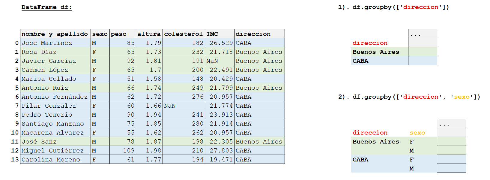
Una vez obtenidos los grupos que deseamos analizar, podemos realizar una función de agregación agg() utilizando algunas o todas las columnas restantes. Estas funciones pueder ser suma, media, mínimo, máximo, contar valores no nulos, entre otras. Veamos algunos ejemplos:
# Agrupar por "direccion" y contar los valores no nulos de todas las columnas
df.groupby(['direccion']).agg('count')| nombre y apellido | edad | sexo | peso | altura | colesterol | IMC | |
|---|---|---|---|---|---|---|---|
| direccion | |||||||
| Buenos Aires | 5 | 5 | 5 | 5 | 5 | 5 | 4 |
| CABA | 9 | 9 | 9 | 9 | 9 | 8 | 9 |
# Agrupar por "direccion" y "sexo" y contar los valores no nulos de alguna columnas
df.groupby(['direccion', 'sexo'])[['edad', 'peso']].agg('count')| edad | peso | ||
|---|---|---|---|
| direccion | sexo | ||
| Buenos Aires | F | 2 | 2 |
| M | 3 | 3 | |
| CABA | F | 4 | 4 |
| M | 5 | 5 |
También se puede asignar para cada columna, una operación distinta:
# Agrupar por "direccion" y "sexo" y calcular el valor máximo de la columna "colesterol" y el promedio de "peso"
df.groupby(['direccion', 'sexo']).agg({'colesterol': ['max'], 'peso': ['mean']})| colesterol | peso | ||
|---|---|---|---|
| max | mean | ||
| direccion | sexo | ||
| Buenos Aires | F | 232.0 | 65.000000 |
| M | 249.0 | 78.666667 | |
| CABA | F | 262.0 | 56.750000 |
| M | 280.0 | 84.200000 |
# Agrupar por "direccion" y "sexo" y calcular los valores máximos y mínimos de la columna "colesterol" y el promedio de "peso"
df.groupby(['direccion', 'sexo']).agg({'colesterol': ['min', 'max'], 'peso': ['mean']})| colesterol | peso | |||
|---|---|---|---|---|
| min | max | mean | ||
| direccion | sexo | |||
| Buenos Aires | F | 200.0 | 232.0 | 65.000000 |
| M | 191.0 | 249.0 | 78.666667 | |
| CABA | F | 148.0 | 262.0 | 56.750000 |
| M | 182.0 | 280.0 | 84.200000 | |
6.4 Matplotlib
Matplotlib es probablemente la biblioteca de Python más usada para crear gráficos, también llamados plots. Esta provee una forma rápida de graficar datos en varios formatos de alta calidad que pueden ser compartidos y/o publicados, resultando una alternativa open source de MATLAB. De hecho, matplotlib.pyplot es una colección de funciones que hacen que matplotlib funcione como MATLAB, con comandos análogos y argumentos similares.
Como ya se imagina, el primer paso es importar la biblioteca. Por convención:
import matplotlib.pyplot as plt6.4.1 Creación de gráficos con matplotlib
Para crear un gráfico con matplotlib, se deben seguir los siguientes pasos:
Crear la figura que contendrá el gráfico, utilizando las funciones
subplots()ofigure(). Se recomienda la primera, como se verá más adelante.Graficar los datos, utilizando distintas funciones dependiendo del tipo de gráfico que se desea realizar:
| Función | Tipo de Gráfico |
|---|---|
plot() |
Gráfico de línea |
scatter() |
Gráfico de puntos |
bar() |
Gráfico de barras verticales |
barh() |
Gráfico de barras horizontales |
pie() |
Gráfico de torta |
Personalizar el gráfico. Este paso no es mandatorio, pero sí, muy recomendado para lograr un mejor entendimiento de la visualización
Mostrar el gráfico, utilizando la función
show()
Esto quiere decir que, si deseamos visualizar datos rápidamente, podríamos realizarlo corriendo únicamente las siguientes tres líneas de código:
Opción 1
fig = plt.figure()
plt.funcion_grafico_elegido() # Reemplazar funcion_grafico_elegido() por una función
plt.show() Opción 2
fig, ax = plt.subplots()
ax.funcion_grafico_elegido() # Reemplazar funcion_grafico_elegido() por una función
plt.show() Pero, ¿cuál debería usar? Eso depende de lo que quieras hacer. A continuación, se verá el detalle de lo que está ocurriendo en cada línea, para que así puedas elegir qué es lo mejor para vos.
plt.figure()<Figure size 672x480 with 0 Axes><Figure size 672x480 with 0 Axes>plt.subplots()
Si bien no se puede ver un gráfico en ninguno de los outputs, analicemos lo que nos imprime:
fig = plt.figure()crea una figura pero sin axes, por lo que muestra<Figure size 640x480 with 0 Axes>.fig, ax = plt.subplots()permite crear ambos: figura y axes, por lo que muestra<Figure size 640x480 with 1 Axes>, <AxesSubplot: >).
Note además, que se ha seguido una convención al nombrarse la figura como fig y los axes como ax. Pero… ¿qué es una figura y un axes?
Una figura es el marco que delimita la zona donde se trazan los gráficos, mientras que los axes, son lo que llamamos comunmente gráficos, es decir, son las áreas donde los puntos se pueden especificar en términos de coordenadas. Por lo tanto, una figura puede contener muchos axes, pero un axes determinado sólo puede estar contenido en una única figura.
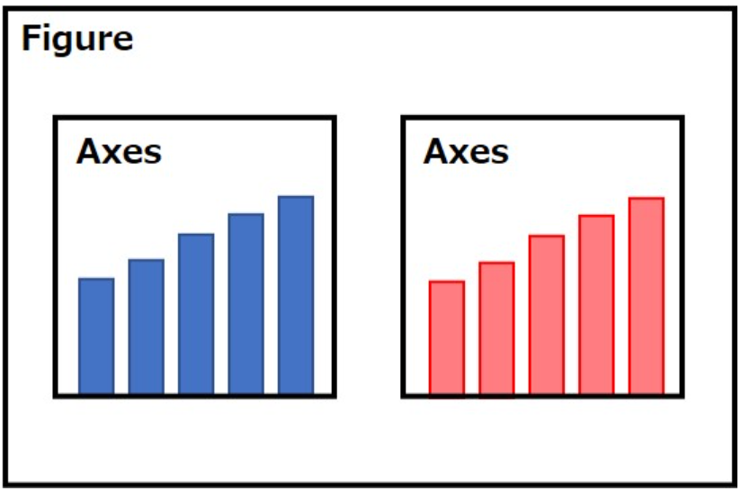
¡Ojo! No confundir axes con axis
Los Axis son los ejes cartesianos que se encargan de establecer los límites, la escala y las dimensiones del gráfico: un axes puede tener 2 Axis, si es un gráfico plano, o 3, si es un gráfico en 3D.
Entonces, con lo aprendido hasta el momento, volvamos a revisar las líneas de código anteriores:
Opción 1
fig = plt.figure() # Se crea una figura vacía sin Axes
plt.funcion_grafico_elegido() # Se grafica según la función elegida
plt.show() # Mostrar Esta opción es más amigable para principiantes ya que es más conciso y resulta muy útil cuando simplemente se desea crear un gráfico para verificar resultados rápidamente.
Opción 2
fig, ax = plt.subplots() # Se crea una figura con un único Axes
ax.funcion_grafico_elegido() # Se grafica según la función elegida
plt.show() # MostrarEsta opción es ideal cuando necesitamos un enfoque más flexible, con gráficos más complejos o con un ajuste fino como los que veremos en este apunte.
6.4.2 Partes de una Figura y personalización
Esta imagen, fue obtenida de la referencia de matplotlib y resume de manera fácil y visual las modificaciones que podemos hacerla a las figuras creadas.

Si desea conocer más detalle, puede ingresar a https://matplotlib.org/stable/tutorials/introductory/quick_start.html.
Con lo aprendido hasta el momento, vamos a realizar nuestro primer gráfico para luego mostrar cómo modificar su aspecto. La función que usaremos es plot(), con la que se obteniene un gráfico de línea; esta recibe los vectores X e Y para formar puntos en el plano cartesiano que son unidos con una línea.
# Grafico elemental
x = [0,2,10,11,18,25]
y = [0,1,2,3,4,5]
fig, ax = plt.subplots()
# Gráfico de línea
ax.plot(x, y)
plt.show()
6.4.2.1 Cambiar el aspecto de los gráficos:
Para diferenciar las curvas o simplemente para modificar los gráficos según nuestros gustos personales, se pueden definir los distintos parámetros dentro de plot(), estableciendo el tipo de línea y puntos, el grosor, el color, etc:
- color = nombre del color, por ejemplo:
'blue', 'green', 'red', etc. - marker = forma de los puntos o marcadores, por ejemplo:
'^', 'o', 'v', etc. - linestyle = estilo de línea, por ejemplo:
'solid', 'dashed', 'dotted'o sus equivalentes:'-', '--', ':',entre otros. - markersize, linewidth = con un número, establecemos el tamaño del marcador y el espesor de la línea respectivamente.
Note que si no le asignamos un valor, se establecen los predefinidos.
x = [0,2,10,11,18,25] # Tiempo (min)
y = [0,1,2,3,4,5] # Distancia (m)
fig, ax = plt.subplots()
ax.plot(x, y, color='green', marker='^', linestyle='--', markersize=8, linewidth=1.2)
plt.show()
Para ver las múltiples opciones disponibles, les dejamos el siguiente link de consulta: https://matplotlib.org/2.1.1/api/_as_gen/matplotlib.pyplot.plot.html
6.4.2.2 Grilla o cuadrícula:
Para leer facilmente el valor de cada punto, podemos agregar una cuadrícula usando grid().
Si deseamos modificarle, por ejemplo, el color, el estilo de línea, o sólo queremos ver uno de los ejes, podemos indicarlo utilizando parámetros muy similares a los vistos anteriormente pero en la funcion grid().
x = [0,2,10,11,18,25] # Tiempo (min)
y = [0,1,2,3,4,5] # Distancia (m)
fig, ax = plt.subplots()
ax.plot(x, y, color='green', marker='^', linestyle='--', markersize=8, linewidth=1.2)
# Grilla preestablecida
ax.grid()
plt.show()#Gráfica con la grilla preestablecida
x = [0,2,10,11,18,25] # Tiempo (min)
y = [0,1,2,3,4,5] # Distancia (m)
fig, ax = plt.subplots()
ax.plot(x, y, color='green', marker='^', linestyle='--', markersize=8, linewidth=1.2)
#Grilla modificada
ax.grid(axis = 'y', color = 'gray', linestyle = 'dashed')
plt.show()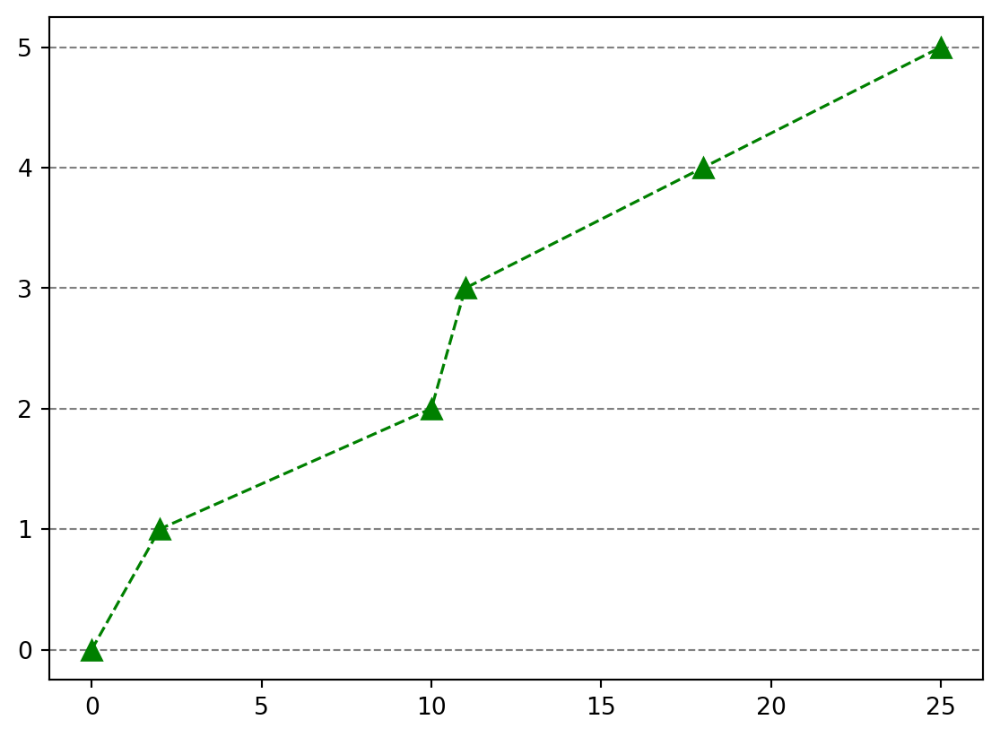
6.4.2.3 Títulos
Una de las partes más importantes para que un gráfico se pueda entender es ponerle un título y explicar qué significa cada eje. Eso se hace con las funciones set_xlabel(), set_ylabel() y set_title(). Cada una recibe un string que se usará como etiqueta del eje X, etiqueta del eje Y o título, respectivamente.
Siendo que los valores de x son el tiempo medido en minutos y los de y una distancia en metros, entonces:
x = [0,2,10,11,18,25] # Tiempo (min)
y = [0,1,2,3,4,5] # Distancia (m)
fig, ax = plt.subplots()
ax.plot(x, y, color='green', marker='^', linestyle='--', markersize=8, linewidth=1.2)
# Mostrar el título del gráfico
ax.set_title("Gráfico de posición")
# Mostrar el título de los ejes
ax.set_xlabel('Tiempo (min)')
ax.set_ylabel('Distancia (m)')
# Grilla preestablecida
ax.grid()
plt.show()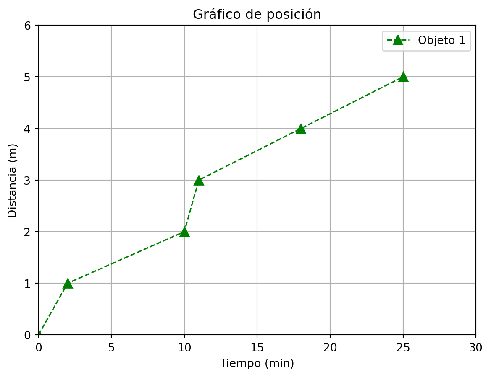
6.4.2.4 Referencias
El gráfico con el que estamos trabajando sólo tiene una línea, pero si contara con más de una, el uso de referencias sería escencial para lograr el entendimiento del mismo. Para rotular las líneas, dentro de plot() se debe definir la referencia como label. Luego se coloca legend()
x = [0,2,10,11,18,25] # Tiempo (min)
y = [0,1,2,3,4,5] # Distancia (m)
fig, ax = plt.subplots()
ax.plot(x, y, label='Objeto 1', color='green', marker='^', linestyle='--', markersize=8, linewidth=1.2)
# Mostrar el título del gráfico
ax.set_title("Gráfico de posición")
# Mostrar el título de los ejes
ax.set_xlabel('Tiempo (min)')
ax.set_ylabel('Distancia (m)')
# Agregar la refencia
ax.legend()
# Grilla preestablecida
ax.grid()
plt.show()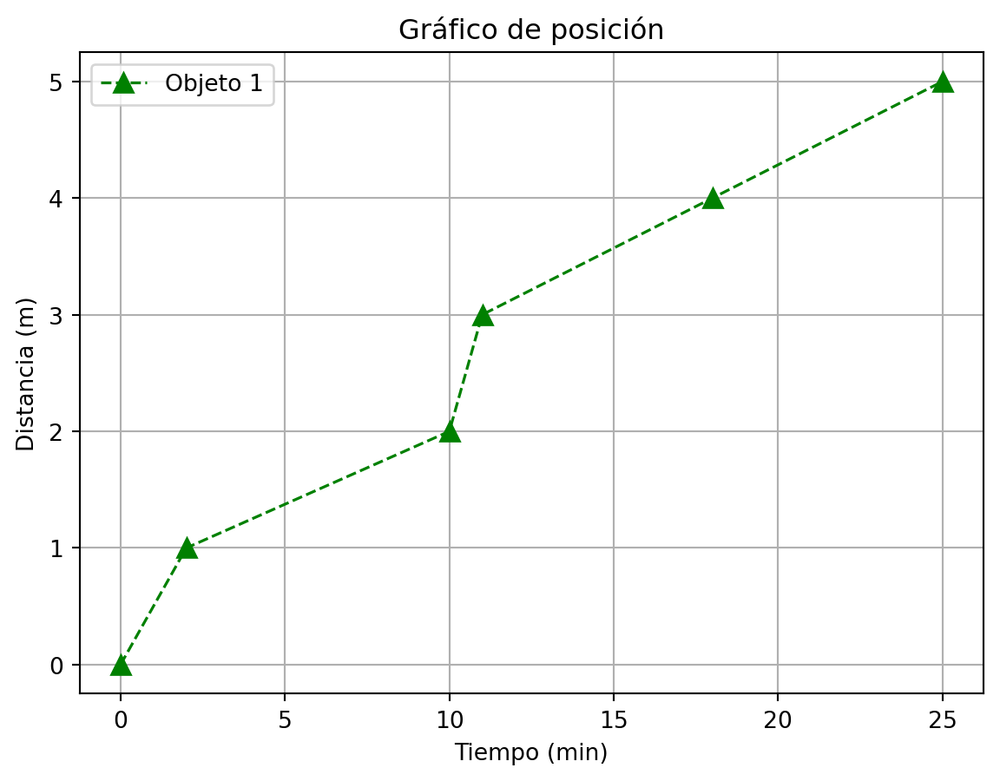
6.4.2.5 Características de los ejes:
Como podemos identificar en los gráficos anteriores, Python decidió las características de los ejes:
- Eje x: se extiende del 0 a 25, de 5 en 5.
- Eje y: se extiende del 0 a 5, de 1 en 1.
Podemos establecer los limites del eje x e y usando set_xlim() y set_ylim() respectivamente.
x = [0,2,10,11,18,25] # Tiempo (min)
y = [0,1,2,3,4,5] # Distancia (m)
fig, ax = plt.subplots()
ax.plot(x, y, label='Objeto 1', color='green', marker='^', linestyle='--',
markersize=8, linewidth=1.2)
# Mostrar el título del gráfico
ax.set_title("Gráfico de posición")
# Mostrar el título de los ejes
ax.set_xlabel('Tiempo (min)')
ax.set_ylabel('Distancia (m)')
# Establecer los límites de los ejes
ax.set_xlim(0, 30)
ax.set_ylim(0, 6)
# Agregar la refencia
ax.legend()
# Grilla preestablecida
ax.grid()
plt.show()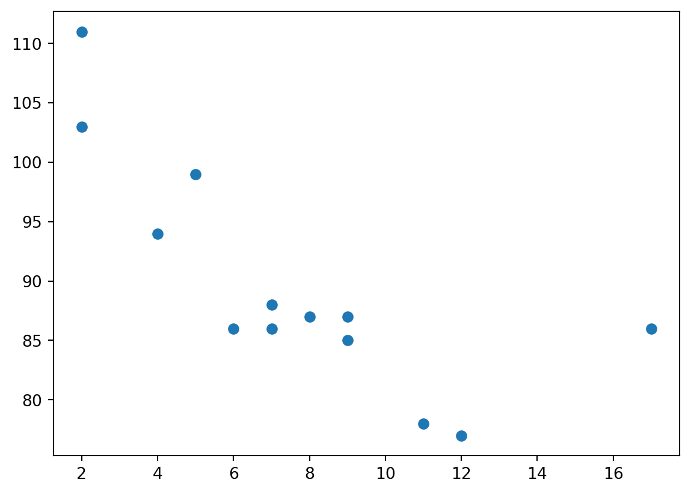
6.4.3 Tipos de gráficos
A continuación, vamos a ver ejemplos de los tipos de gráficos más comunes, las funciones que son necesarias para crearlos y cuándo se debe utilizar cada uno de ellos.
Para estos ejemplos, los datos a graficar son valores de listas únicamente por fines didácticos, ya que podría tratarse de arrays o columnas de DataFrames. Además, recuerden que mucho de lo aprendido para modificar el aspecto de un gráfico, como agregar títulos, cuadrículas, límites a los ejes, etc., se puede aplicar también en estas figuras.:
6.4.3.1 Gráfico de línea
El gráfico de línea permite visualizar cambios en los valores lo largo de un rango continuo (tendencias), como puede ser el tiempo o la distancia. Para crearlo, se utiliza la función plot(), como vimos anteriormente:
x = [0,2,10,11,18,25]
y = [0,1,2,3,4,5]
fig, ax = plt.subplots()
ax.plot(x, y)
plt.show()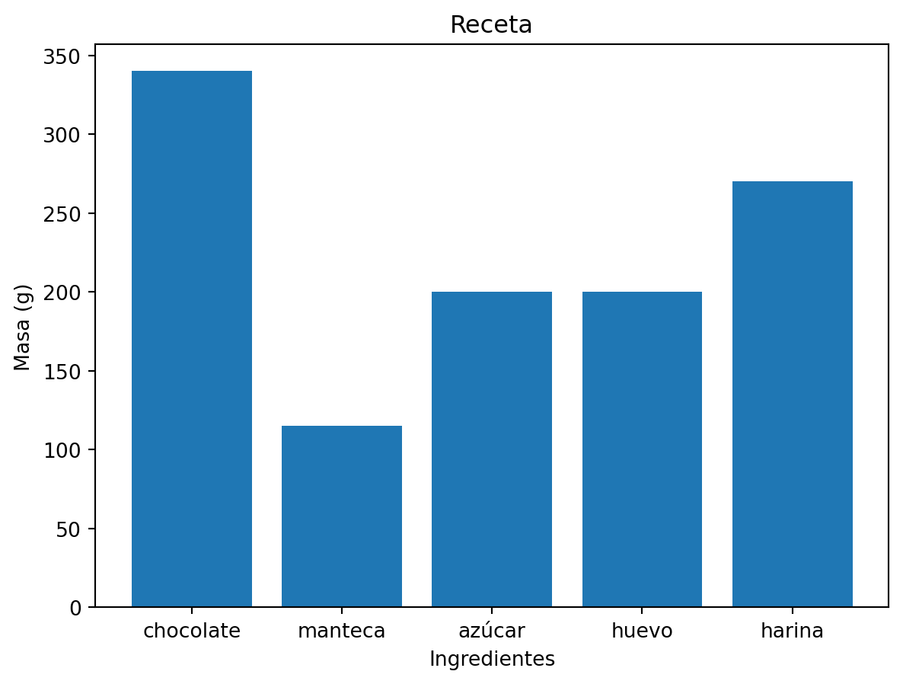
6.4.3.2 Gráfico de dispersión o puntos
El gráfico de dispersión o puntos permite visualizar la relación entre las variables. Para crearlo, se utiliza la función scatter():
x = [5,7,8,7,2,17,2,9,4,11,12,9,6]
y = [99,86,87,88,111,86,103,87,94,78,77,85,86]
fig, ax = plt.subplots()
ax.scatter(x, y)
plt.show()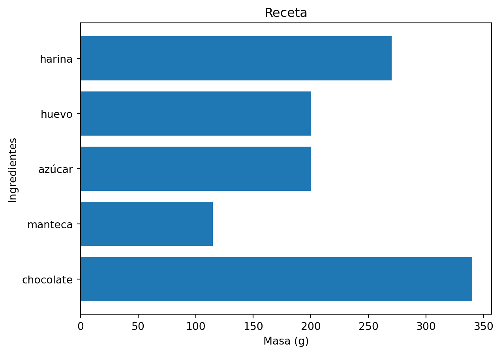
6.4.3.3 Gráfico de barras
El gráfico de barras permite visualizar proporciones, comparando dos o más valores entre sí. Para crearlo, se utiliza la función bar(), la cual primero recibe, en primer lugar, las etiquetas de las barras que se van a mostrar y en segundo lugar, la altura correspondiente a cada una de estas barras.
peso = [340, 115, 200, 200, 270]
ingredientes = ['chocolate', 'manteca', 'azúcar', 'huevo', 'harina']
fig, ax = plt.subplots()
ax.bar(ingredientes, peso)
ax.set_xlabel('Ingredientes')
ax.set_ylabel('Masa (g)')
ax.set_title("Receta")
plt.show()Note que con la función anterior, las barras adquieren una dirección vertical: si quisieramos verlas de manera horizontal, debemos usar la función barh() y cambiar los títulos de los ejes según corresponda:
peso = [340, 115, 200, 200, 270]
ingredientes = ['chocolate', 'manteca', 'azúcar', 'huevo', 'harina']
fig, ax = plt.subplots()
ax.barh(ingredientes, peso)
ax.set_ylabel('Ingredientes')
ax.set_xlabel('Masa (g)')
ax.set_title("Receta")
plt.show()6.4.3.4 Gráfico de torta
El gráfico de torta, como el de barras, permite visualizar y comparar proporciones pero de manera circular y como partes de un todo. Para crearlo, se utiliza la función pie(), la cual podría recibir solamente números pero es útil también saber qué simboliza cada parte. Por eso, para referenciar cada porción se usa el parámetro labels. Por otro lado, el parámetro autopct establece cómo se mostrará el porcentaje: por ejemplo, %1.1f%% le indica que el porcentaje tendrá un decimal, mientras que %1.2f%% tendrá dos decimales.
peso = [340, 115, 200, 200, 270]
ingredientes = ['chocolate', 'manteca', 'azúcar', 'huevo', 'harina']
fig, ax = plt.subplots()
ax.pie(peso, labels= ingredientes, autopct='%1.1f%%')
ax.set_title("Receta")
plt.show()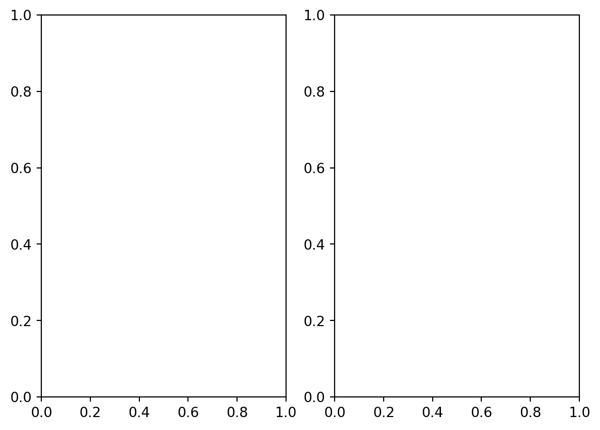
6.4.4 Gráficos múltiples
En los casos anteriores, creamos siempre un sólo gráfico con una curva, en una figura. Pero… ¿Cómo podríamos graficar varias curvas en un mismo gráfico?
# Valores que se desean graficar
x = [0, 1, 2, 3, 4, 5]
y_linear = [0, 1, 2, 3, 4, 5]
y_quadratic = [0, 1, 4, 9, 16, 25]
y_cubic = [0, 1, 8, 27, 64, 125]
fig, ax = plt.subplots(figsize=(5, 3))
ax.plot(x, y_linear, label='Lineal')
ax.plot(x, y_quadratic, label='Cuadrático')
ax.plot(x, y_cubic, label='Cúbico')
ax.set_title("Gráfico de múltiples curvas")
ax.set_xlabel('x')
ax.set_ylabel('y')
ax.legend()
plt.show()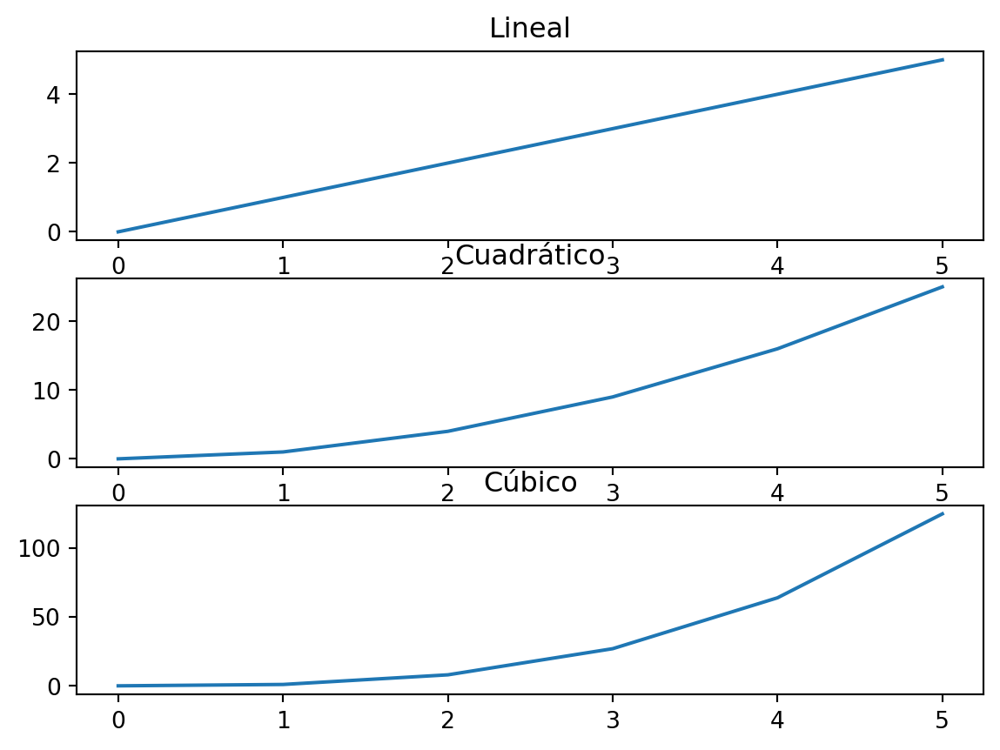
Note que se agregan nuevos datos al mismo axes, por lo que siempre usamos plot() pero con distintos valores de y. Asimismo, se estableció un tamaño de la figura con figsize=(width, height)
6.4.5 Grilla de gáficos
También podríamos querer ver varios axes en una misma figura. Para ello, tenemos que definir, como si se tratase de una matriz o tabla, cuántas columnas ncols y cuantas nrows de gráficos deseamos. Por ejemplo, supongamos que quiero ver dos gráficos en una misma fila:
fig, ax = plt.subplots(nrows=1, ncols=2) # o simplemente plt.subplots(1,2)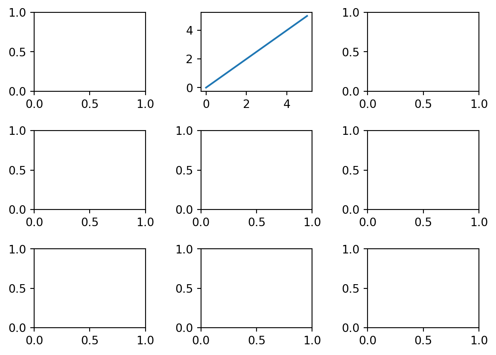
De manera análoga, podemos representar las 3 curvas anteriores pero viendo 3 filas de gráficos en una única columna:
# Valores que se desean graficar
x = [0, 1, 2, 3, 4, 5]
x_linear = [0, 1, 2, 3, 4, 5]
x_quadratic = [0, 1, 4, 9, 16, 25]
x_cubic = [0, 1, 8, 27, 64, 125]
fig, ax = plt.subplots(nrows=3, ncols=1)
ax[0].plot(x, x_linear)
ax[0].set_title('Lineal')
ax[1].plot(x, x_quadratic)
ax[1].set_title('Cuadrático')
ax[2].plot(x, x_cubic)
ax[2].set_title('Cúbico')
plt.show()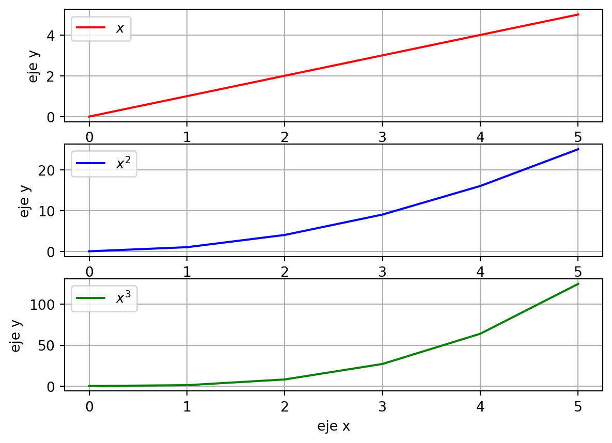
Entonces, lo único que debemos hacer es indicar la posición del axes con números dentro del corchete . Si tengo varias columnas y filas, dentro del corchete, se indica primero la fila y luego la columna: ax[fila, columna].
fig, ax = plt.subplots(nrows=3, ncols=3)
fig.subplots_adjust(wspace=0.5, hspace=0.5) # Con esto indicamos el espacio libre entre los subplots
ax[0, 1].plot(x, x_linear)
plt.show()6.4.6 Funciones de Gráficas
En términos generales, si nos encontramos en la situacion de copiar y pegar las mismas líneas de código para realizar gráficos similares, trendríamos que pensar en crear una función que simplifique esta tarea. Por ejemplo:
x = [0, 1, 2, 3, 4, 5]
x_linear = [0, 1, 2, 3, 4, 5]
x_quadratic = [0, 1, 4, 9, 16, 25]
x_cubic = [0, 1, 8, 27, 64, 125]
fig, ax=plt.subplots(3)
ax[0].plot(x,x_linear,label="$x$",color="r")
ax[0].set_xlabel("eje x")
ax[0].set_ylabel("eje y")
ax[0].legend()
ax[0].grid()
ax[1].plot(x,x_quadratic,label="$x^2$",color="b")
ax[1].set_xlabel("eje x")
ax[1].set_ylabel("eje y")
ax[1].legend()
ax[1].grid()
ax[2].plot(x,x_cubic,label="$x^3$",color="g")
ax[2].set_xlabel("eje x")
ax[2].set_ylabel("eje y")
ax[2].legend()
ax[2].grid()
plt.show()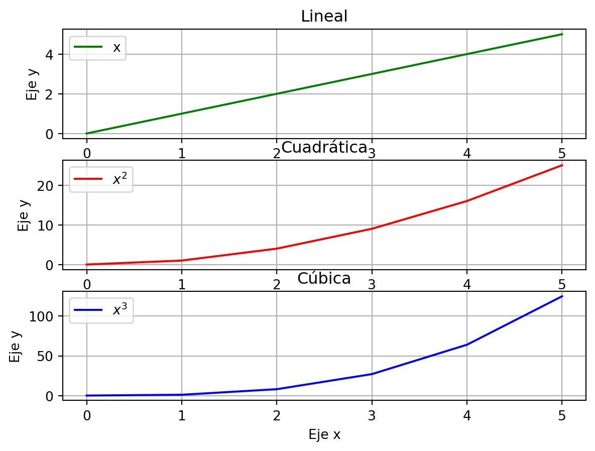
Para evitar lo anterior, definimos una función a la que le debemos entregar los valores a graficar:
def crear_grafico(x, y, label, ax, xlabel, ylabel, title, color):
"""Crea un gráfico a partir de vectores con valores de los ejes x e y.
Recibe además:
- El texto para el label
- El subplot a donde graficar
- Un label para el eje x
- Un label para el eje y
- Un título para el gráfico
- Un color
El color y el eje pueden ser None. En ese caso toman valores por default"""
if color == None:
color = "blue"
# Si sólo haremos un gráfico, no necesito indicarle la posición
if ax == None:
fig, ax = plt.subplots()
# Definimos el gráfico
ax.plot(x, y, label=label, color=color)
ax.set_xlabel(xlabel)
ax.set_ylabel(ylabel)
ax.set_title(title)
return axfig , ax = plt.subplots(3)
# En vez de copiar y pegar el código, llamo a la función crear_grafico():
crear_grafico(x, x_linear, "x", ax[0], "Eje x", "Eje y", "Lineal", color="green")
crear_grafico(x, x_quadratic, "$x^2$", ax[1], "Eje x", "Eje y", "Cuadrática", color="red")
crear_grafico(x, x_cubic, "$x^3$", ax[2], "Eje x", "Eje y", "Cúbica", None)
# Hacemos un for para agregar la cuadrícula y las referencias en cada axes:
for axes in fig.axes[:]:
axes.grid()
axes.legend()Como comentamos dentro de la función, también podemos usar crear_grafico() para un único gráfico:
crear_grafico(x, x_linear, "x", None, "", "", "", "green")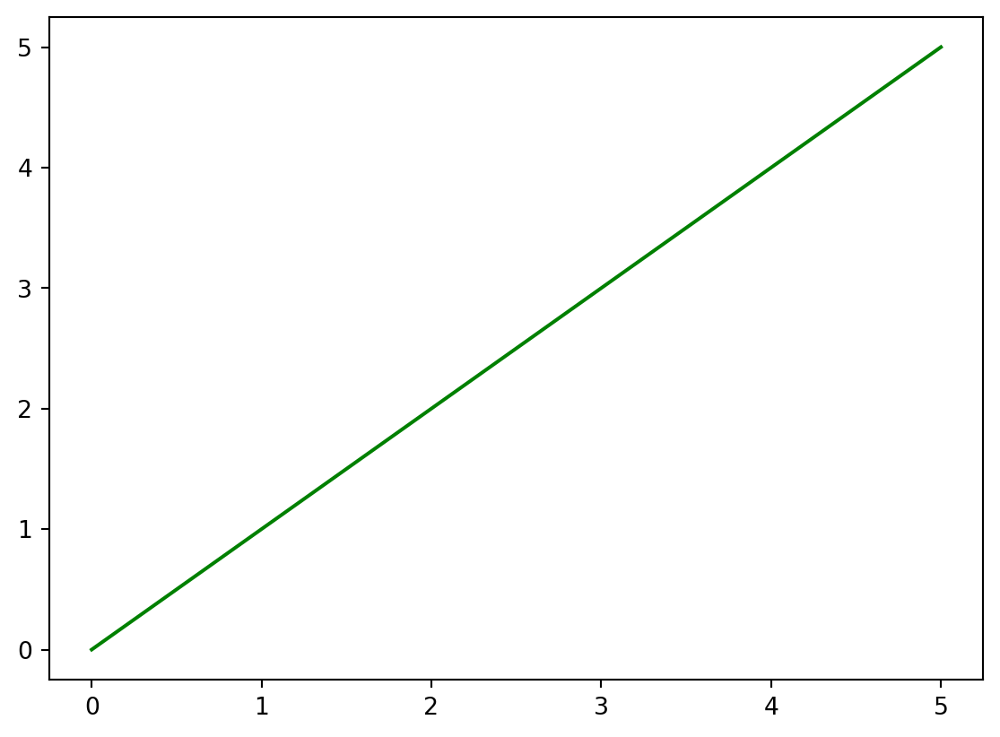
6.4.7 Gráficos utilizando NumPy y Pandas
- NumPy:
Cuando se realizó el gráfico lineal, cuadrático y cúbico de x, se utilizaron listas de Python. A continuación puede ver lo fácil que podría realizarse utilizando NumPy:
x = np.arange(0, 6)
y_linear = x
y_quadratic = x**2
y_cubic = x**3
fig, ax = plt.subplots(figsize=(5, 3))
ax.plot(x, y_linear, label='Lineal')
ax.plot(x, y_quadratic, label='Cuadrático')
ax.plot(x, y_cubic, label='Cúbico')
ax.set_title("Gráfico de múltiples curvas")
ax.set_xlabel('x')
ax.set_ylabel('y')
ax.legend()
plt.show()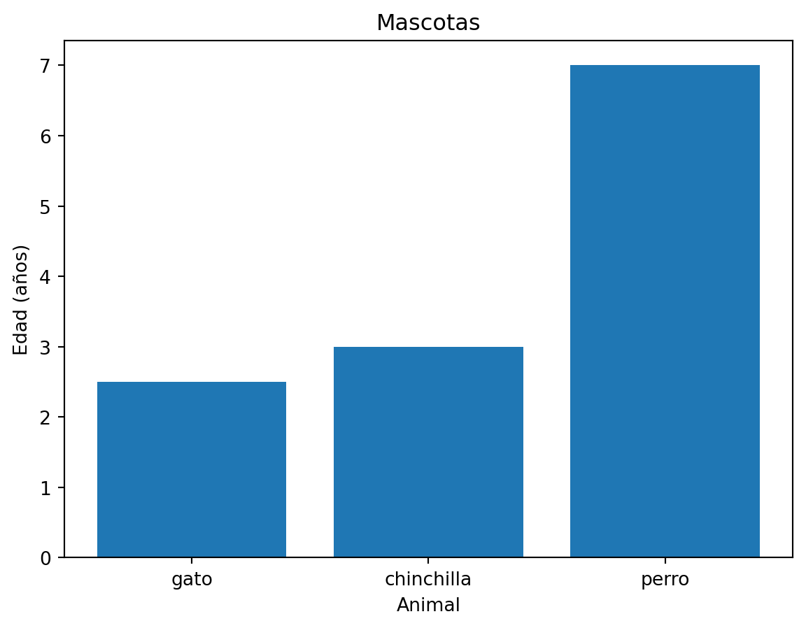
- Pandas:
Si deseamos visualizar los datos contenidos en un DataFrame, podemos realizarlo facilmente. Definimos df:
data = {'animal': ['gato','chinchilla', 'perro'],
'edad': [2.5, 3, 7],
'visitas': [1, 3, 2],
'prioridad': ['si', 'si', 'no']}
df = pd.DataFrame(data)
df| animal | edad | visitas | prioridad | |
|---|---|---|---|---|
| 0 | gato | 2.5 | 1 | si |
| 1 | chinchilla | 3.0 | 3 | si |
| 2 | perro | 7.0 | 2 | no |
# Determino las columnas del DataFrame que queremos graficar
x_values = df['animal']
y_values = df['edad']
fig, ax = plt.subplots()
ax.bar(x_values, y_values)
ax.set_xlabel('Animal')
ax.set_ylabel('Edad (años)')
ax.set_title("Mascotas")
plt.show()